- головной офис
- +7(492) 237 07 37
- +7(909) 275 62 65
строительство
c 2014 года
Одним из важнейших направлений деятельности Группы Компаний «Изомат- Гласс», является строительное направление по возведению зданий, а так же поставка широко ассортимента строительных материалов.
строительство банков
Одно из направлений Компании «Изомат-Гласс»- строительство банков и производство защитного банковского оборудования с 2015 года. В деятельность нашей организации входит разработка проектов и строительство банков, изготовление необходимых элементов, монтаж и установка специальных помещений.
Осуществление всего спектра строительных услуг средствами нашей компании: электромонтажные и отделочные работы, кондиционирование и вентиляция помещений, отделка фасадов и многое другое. Комплектация объектов строительства специальным оборудованием собственного производства.
строительство домов
из оцилиндрованного бревна
Вы можете заказать у нас полный комплекс работ по их полной реализации, или приобрести комплект для самостоятельной сборки. Посадные пазы и монтажные чаши готовятся в производственном цехе и имеют один размер.
Поэтому построить дом из бревна можно довольно быстро - сборка осуществляется подобно конструктору. Нужно лишь заранее подготовить фундамент, на котором потом будет стоять сруб. Проекты деревянных домов отличает большое разнообразие.
дома из клееного бруса
Клееный брус изготавливается из хвойных пород древесины, обработанной для придания ей определенной формы и гладкости.
Это позволяет снизить затраты времени монтаж и обеспечить приятный внешний вид здания. Высокая экологичность и естественность натурального дерева позволяют сооружать здания с высокой надежностью и уютом.
дома из профилированного бруса
Строительство домов из профилированного бруса с каждым днем становится нее более востребованным благодаря оптимальному соотношение цены и качества.
Этот материал изготавливается из натуральной древесины хвойных пород - сосны кедра, ели, лиственницы. Они не подвергаются химической обработке, благодаря чему обладают высоким уровнем экологической безопасности. Благодаря специальному профилю монтаж такого материала осуществляется максимально быстро и качественно.
каркасные дома
Строительство каркасных домов под ключ все больше набирает популярность в России.
Это весьма перспективная технология возведения загородного малоэтажного жилья, распространенная во многих странах мира, среди которых Канада, Скандинавия, Германия и ряд других.
Причина роста спроса кроется в том, что построить каркасный дом под ключ можно за весьма непродолжительный срок не превышающий полугода. При этом эксплуатационные характеристики и внешний вид практически не уступают строениям из других материалов. Не стоит забывать и об экономической составляющей - цены на каркасные дома очень привлекательны и доступны для большого числа людей.
комбинированные дома
Комбинированные дома, как архитектурное явление, известны еще с_18-19 веков. По своей сути они представляют из себя здания, выполненные из двух различных материалов: первый этаж как правило каменный или бетонный, второй - деревянный.
Преимущества такого типа постройки можно почувствовать не только при строительстве, но и в процессе эксплуатации. Немаловажным фактором является и свобода выбора архитектурного решения, позволяющая применять всё новые и новые материалы, которые так же как дерево способны «дышать» и пропускать влагу, что обеспечивает комфортные условия проживания.
одно-двухэтажные кирпичные дома
Компания осуществляет строительство кирпичных домов под ключ. Мы возьмем на себя весь комплекс работ, начиная от геологических изысканий и проектирования до полной сдачи готового объекта.
Наши мастера могут построить дом из кирпича по любому типовому или индивидуально разработанному проекту
одно-двухэтажные дома из пеноблоков и пенобетона
Пенобетон представляет собой современный строительный материал, изготавливаемый из песка, воды, цемента и специального пенообразователя, благодаря которому он имеет пористую структуру.
Его эксплуатационные характеристики намного выше, чем у обычного бетона за счет более высокой прочности и низкого веса. Его плотность может составлять от 400 до 1600 кг/мЗ. Строительство домов из пенобетона становится все более популярным за счет своей дешевизны и хороших эксплуатационных показателей. Низкая цена достигается за счет довольно простой технологии изготовления и меньшему использованию цементу за счет его низкой плотности.
дома из несъёмной опалубки
Несъёмная опалубка - это две панели из пенополистирола, соединённые друг с другом перемычками. Каждый такой модуль имеет полости, куда затем заливается бетон, а так же укладывается арматура.
Технология предусматривает специальную систему замков, которая позволяет соединять модули далее в блоки, при этом с высокой точностью. Постройки с несъемной пенополистирольной опалубкой экономичны в силу того, что материал имеет характеристики во многом превосходящие кирпич или бетон.
продажа готовых комплектов деревянных домов
Наша Компания осуществляет продажу комплектов домов различного типа.
Они включают в себя асе необходимые перекрытия, стены и конструкции, необходимые для возведения здания. Наши специалисты имеют многолетний опыт изготовления строительных сооружений из широкого спектра материалов. Их производство и изготовление осуществляется на современном высокоточном оборудовании, что позволяет избежать различных сложностей при дальнейшем строительстве.
проекты беседок для дачи
Беседка представляет собой легкую крытую постройку, предназначенную для отдыха. Ее конструкция позволяет обеспечить эффективную защиту от солнца или непогоды, а ее внешний вид станет красочным элементом ландшафтного дизайна.
Они пользуются высокой популярностью как незаменимое место для отдыха на природе в компании друзей. Именно поэтому в настоящее время строительные компании предлагают множество их различных вариантов.
проекты бань из бруса
Компания оказывает услуги профессионального строительства под ключ бань любого типа. Комплект такого здания включает в себя фундамент, двери, окна, кровлю, полки.
Мы предлагаем комплексный подход - при выполнении заказа мы осуществим доставку и возведение по максимально выгодным условиям. Мы готовы разработать для вас индивидуальный проект бани с учетом веек пожеланий клиента. Также у нас представлены наиболее востребованные типовые решения, в которых реализованы требования большинства заказчиков.
пристройки
Пристройка представляет собой сооружение, возводимое для увеличения площади здания без внесения изменения в его конструкцию.
Такое строение имеет свой собственный фундамент, крышу и стены, однако при их проектировании необходимо в полной мере учитывать характеристики дома и его состояние.
малое архитектурное строительство
Малые архитектурные формы представляют собой различные декоративные элементы и сооружение Изделия такого типа нужны для обустройства участка и придания ему приятного и ухоженного вида, они призваны обеспечить максимальную функциональность и удобство территории для отдыха.
К малым архитектурным формам относят:
- - Ограды
- - Скамейки
- - Арки
- - Мостики
- - Будки и многое другое
дома из кедра
Наша компания оказывается услуги по строительству домов из профилированного и оцилиндрованного бревна сибирского кедра.
Такой материал уже многие годы пользуется популярностью за счет высоких эксплуатационных характеристик и отличных декоративных качеств. Его прочность позволяет применять его для возведение практически любых по сложности конструкций.
дома из лиственницы
Компания предлагает своим клиентам рубку срубов и строительство домов из лиственницы. Благодаря особенным характеристикам данной породы древесины сооружения из нее отличаются теплотой, экологичностью и долговечностью.
Такие срубы легко переносят воздействия высокой влажности, перепады температур и выдерживают эксплуатацию в суровых климатических условиях.
рубленные деревянные дома
Рубленные дома представляют собой традиционные технологии строительства из дерева. Их основой является сруб, которые складывается из горизонтальных рядов бревен-венцов, которые вытесаны ручным методом до удобного для работы размера. Специалистами нашей компании освоены все основные способы рубки, вплоть до самых прогрессивных.
Это позволяет нам реализовывать проекты любой сложности по разумным ценам. Сооружения такого типа обладают рядом преимуществ, среди которых приятная и уютная атмосфера. Это достигается благодаря внутренней структуре бревен, создающего оптимальный уровень обмена воздухом и кислородного баланса.
Также такие строения характеризуются долговечностью и простоят несколько десятков лет. Высокие декоративные свойства древесины также являются их неоспоримым преимуществом и позволяют им красочно вписаться в любой ландшафт.
строительство клубных домов
- - Субподрядные, общестроительные и отделочные работы
- - Фасады
- - Внутренние коммуникации
- - Кровельные работы любой сложности
промышленное строительство
Строительство ангаров, складских и производственных помещений, модульных котельных качественное устройства промышленных полов любого вида для вас с учётом всех требований и нюансов конкретно вашего строения.
Конструкции полов и подстилающих слоев будут подобраны грамотно и вы обойдётесь минимальными затратами на их производство. Промышленные полы не боятся химического и различного механического воздействия и с точки зрения эстетичности они являются лидером среди покрытий.
строительство ресторанов и кафе
ремонт
продажа кровли
Ключевое направление деятельности нашей компании - продажа строительных материалов для кровли крыш и фасадов зданий, для их тепло и гидроизоляции. В ассортименте проверенная многолетним опытом использования продукция отечественных и зарубежных производителей. В нашем магазине вы сможете приобрести разнообразные кровельные материалы в любом необходимом количестве. Вы всегда сможете подобрать у нас то, что вам нравится по цене, внешнему виду, а главное качеству. Ещё одним направлением нашей деятельности является разработка проектов для частных домов и коттеджей, расчёт расхода материалов, изготовление и монтаж всех элементов конструкции.
- 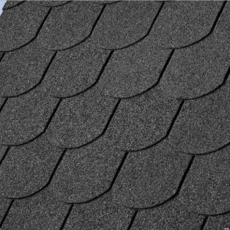
гибкая кровля - 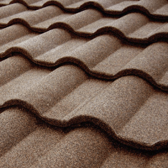
композитная кровля - 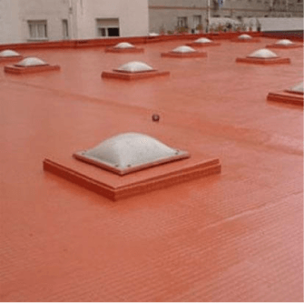
мастичная кровля - 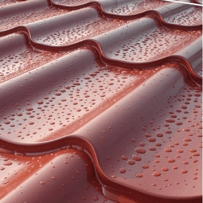
металлочерепица - 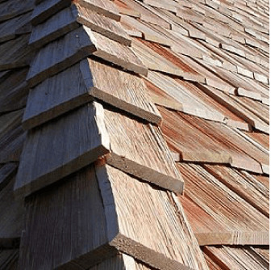
натуральная кровля - 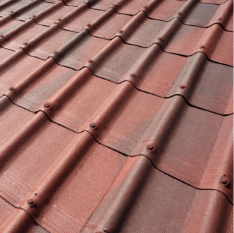
ондувилла - 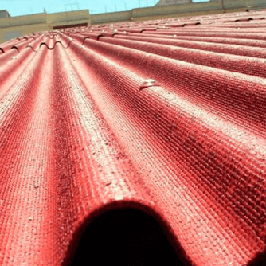
ондулин - 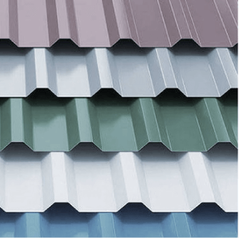
профнастил - 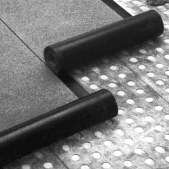
рулонная кровля - 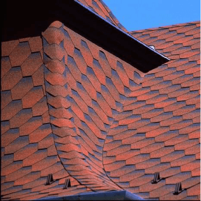
эксклюзивная кровля - 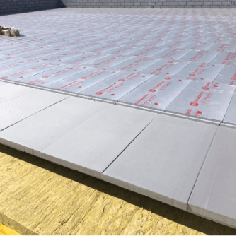
кровля из пвх
ремонт кровли
В настоящее время мы оказываем следующие услуги по кровле:
- Продажа кровельных и изоляционных материалов в широком ассортименте;
- Замер и расчёт стоимости и количества требуемых мате;
- Монтаж и изготовление кровельны конструкций и аксессуаров;
- Создание проектов работ и составление необходимой документации;
- Сервисное обслуживание и ремонт;
капитальный ремонт зданий и сооружений
а) Комплексный капитальный ремонт - это ремонт с заменой конструктивных элементов и инженерного оборудования и их модернизацией. Он включает работы, охватывающие все здание в целом или его отдельные секции, при котором возмещается их физический и функциональный износ.
б) Выборочный капитальный ремонт - это ремонт с полной или частичной заменой отдельных конструктивных элементов зданий и сооружений или оборудования, направленные на полное возмещение их физического и частично функционального износа.